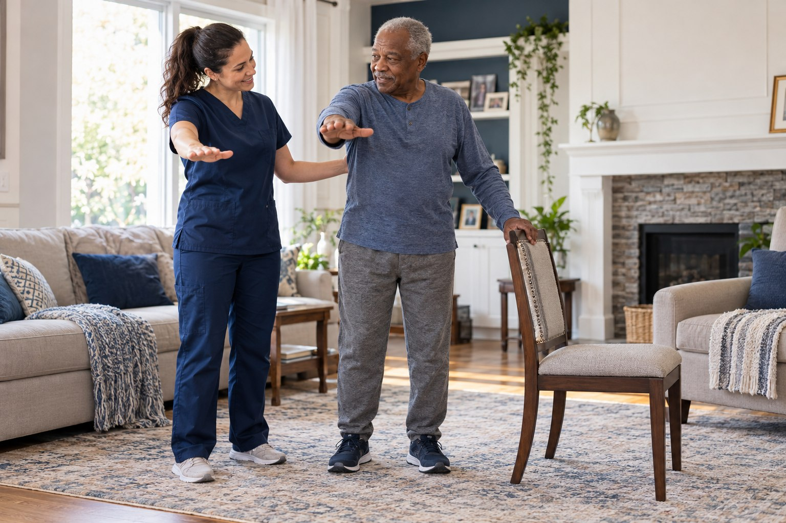

CARE PROGRAMS
Different needs.
One personal approach.
Explore care pathways that bring everyday priorities into focus. Each individual plan depends on assessed needs, orders, and agency availability.

FIND A STARTING POINT
What does the
next step look like?
These pathways organize common questions and goals. They are not separate guarantees of service or eligibility.
Recovering at Home
A starting point for planning support after a hospital stay or a change in health needs.
Explore this care pathway02 / CARE AT HOMEMobility & Independence
Conversations and care planning around the way you move through your own home.
Explore this care pathway03 / CARE AT HOMESupport for Daily Living
A personal approach to the activities that shape everyday life at home.
Explore this care pathway04 / CARE AT HOMEUnderstanding Your Care
Room for questions about your care instructions, medications, and day-to-day health routines.
Explore this care pathway05 / CARE AT HOMEFamily & Caregiver Support
Helpful conversations for the family members and caregivers chosen by the patient.
Explore this care pathwayBUILT AROUND THE INDIVIDUAL
A pathway is a starting point.
Your plan is personal.
More than one discipline may be involved. Ask which services can support your needs, how the team will coordinate, and what to expect from visits.
Meet the care disciplines